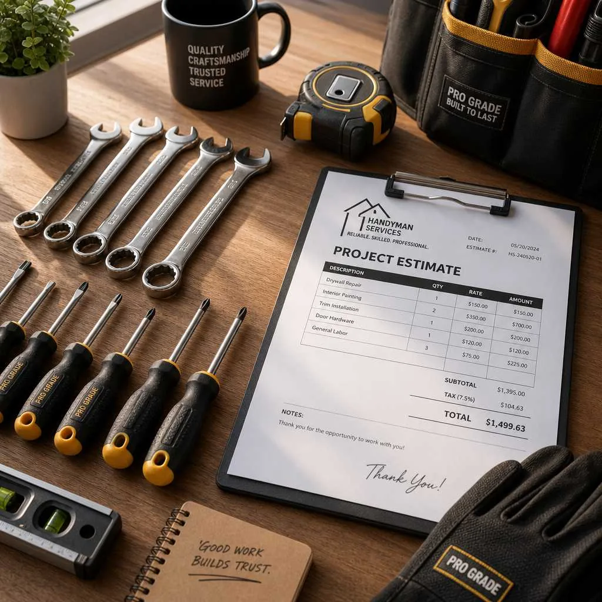
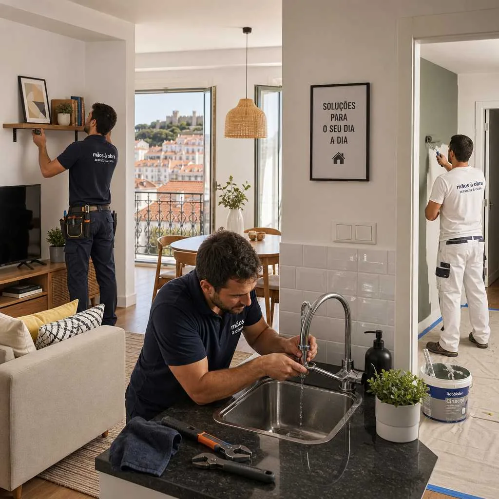

Preço Handyman Lisboa: Guia de Custos e O Que Esperar
Saber quanto pode custar um serviço de handyman e faz-tudo ajuda a evitar surpresas e a comparar propostas com mais confiança. Este guia reúne valores indicativos praticados atualmente na Grande Lisboa, Cascais e Setúbal, com foco em transparência e decisões informadas.
Quando surge uma lista de tarefas em casa, é normal perguntar: quanto pode custar um serviço de handyman e faz-tudo ao domicílio em Lisboa? A resposta depende sempre do tipo de trabalho, materiais, deslocação e urgência. Ainda assim, há valores de referência na Grande Lisboa que ajudam a comparar propostas com mais clareza antes de adjudicar.

Se precisa de resolver vários pontos numa única visita, pode começar por pedir avaliação no serviço de reparações gerais e faz-tudo. Para trabalhos específicos, também pode cruzar preços com canalizações, electricidade, pinturas, carpintaria, serralharia, manutenção e piscinas.
Valores indicativos de handyman e faz-tudo em Lisboa
Para serviços domésticos gerais, é comum encontrar valores por hora na ordem de 25 € a 55 €, dependendo da complexidade do trabalho e da zona. Em muitos casos existe também um valor mínimo de deslocação/serviço, que pode variar entre 50 € e 80 €.
Em tarefas simples de curta duração (por exemplo, ajustar portas, montar mobiliário ou trocar acessórios), o custo final pode variar entre 60 € e 150 €. Já para intervenções com mais preparação, materiais e tempo de execução, é comum encontrar valores numa faixa mais ampla.
Preços por tipo de trabalho: o que é comum no mercado
Pequenos arranjos e reparações rápidas
Montagem de móveis, fixação de suportes, pequenas correções de fechaduras e ajustes em casa são normalmente os trabalhos mais acessíveis. O orçamento depende do número de tarefas no mesmo pedido e do tempo real de execução.
Canalização e electricidade de baixa complexidade
Substituição de torneiras, sifões, tomadas, interruptores ou pequenas correções elétricas podem ter valores intermédios, com variação conforme o acesso ao local e necessidade de peças. Se houver diagnóstico técnico mais profundo, o valor tende a subir.
Pintura, carpintaria e serralharia
Trabalhos por divisão ou por área (como pintura, reparação de madeira ou elementos metálicos) costumam depender muito da preparação prévia e do estado atual das superfícies. Por isso, o mais seguro é pedir medição e escopo detalhado antes de comparar preços.
Lisboa, Cascais e Setúbal: há diferenças de preço?
Sim, pode haver diferenças. Em zonas com procura mais elevada, como Cascais e algumas áreas centrais de Lisboa, é comum encontrar valores ligeiramente acima da média. Na Margem Sul e em partes da região de Setúbal, os preços podem ser mais competitivos em alguns serviços.

Mesmo dentro da mesma cidade, o orçamento final depende da deslocação, estacionamento, acessos (por exemplo, ausência de elevador) e janela horária solicitada. Serviços urgentes fora de horário normal podem incluir majoração.
Fatores que mais influenciam o orçamento
- Complexidade técnica: tarefas simples têm custos diferentes de intervenções com diagnóstico, desmontagem ou testes.
- Materiais e consumíveis: confirme sempre se estão incluídos no valor apresentado.
- Deslocação: distância e tempo de viagem podem influenciar o total.
- Urgência: pedidos para o próprio dia ou fim de semana tendem a ter acréscimo.
- Agrupamento de tarefas: juntar vários trabalhos numa visita pode melhorar a relação custo-benefício.
Como comparar propostas sem cair em armadilhas
Peça pelo menos dois ou três orçamentos com o mesmo escopo. Compare não só o preço total, mas também o que está incluído: mão de obra, materiais, deslocação, prazo e garantia. Um valor muito baixo pode excluir itens importantes e gerar custos extra depois.
Uma proposta clara deve indicar tarefas, quantidades, condições de pagamento e eventuais exclusões. Esta transparência reduz conflitos e facilita a decisão.
Handyman/faz-tudo ou especialista: quando escolher cada opção
Para múltiplas reparações pequenas no mesmo imóvel, o handyman e faz-tudo costuma ser a solução mais prática. Para trabalhos que exijam certificação específica, projeto técnico ou intervenção estrutural, pode ser necessário um especialista dedicado.
Na prática, muitos pedidos combinam as duas abordagens: começar pelo serviço faz-tudo para resolver o essencial e, quando necessário, avançar para especialidades técnicas.
Conclusão
Os preços de handyman/faz-tudo em Lisboa, Cascais e Setúbal devem ser lidos como valores indicativos praticados atualmente. O orçamento final depende sempre da avaliação concreta do trabalho, materiais, deslocação, urgência e complexidade da intervenção.
Precisa de um handyman ou faz-tudo em Lisboa? Fale connosco pelo WhatsApp e peça um orçamento sem compromisso.
Perguntas frequentes
Qual é o preço médio por hora de um handyman/faz-tudo em Lisboa?
Como referência, é comum encontrar valores na ordem de 25 € a 55 € por hora. O valor final depende do tipo de tarefa, da zona e da complexidade técnica.
Porque é que dois orçamentos para o mesmo trabalho podem ser diferentes?
Diferenças de preço podem resultar de materiais incluídos, deslocação, nível de detalhe do serviço, urgência e garantia oferecida. Compare sempre o escopo completo e não apenas o total.
Em Cascais os preços são mais altos do que em Lisboa?
Em alguns serviços pode haver valores ligeiramente superiores, sobretudo em zonas de maior procura. Ainda assim, o mais importante é pedir orçamento com descrição detalhada do trabalho.
Setúbal e Margem Sul têm preços mais baixos?
Em vários casos os valores podem ser mais competitivos, mas não é regra absoluta. O preço depende também de acessos, deslocação, urgência e materiais necessários.
Os materiais estão incluídos no orçamento de handyman/faz-tudo?
Nem sempre. Alguns orçamentos incluem apenas mão de obra; outros incluem também materiais e consumíveis. Confirme sempre esta separação antes de aprovar.
Como pedir um orçamento mais preciso para evitar surpresas?
Indique morada, lista de tarefas, fotos, medidas aproximadas e se há urgência. Quanto mais contexto fornecer, mais fiável será a proposta inicial.